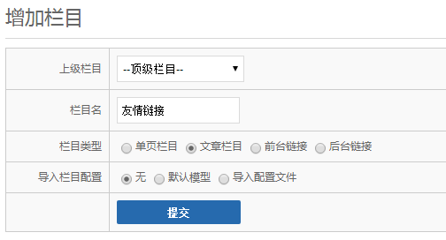
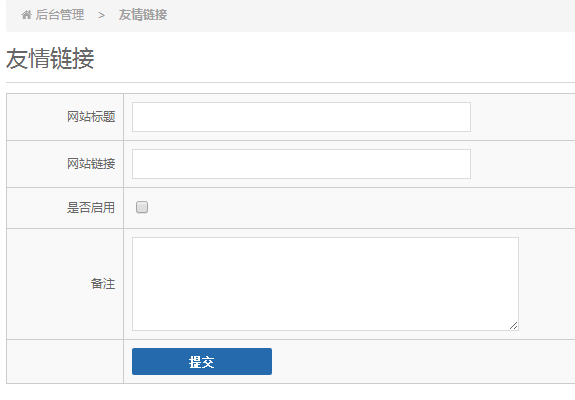
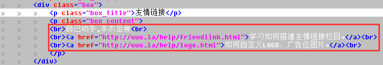
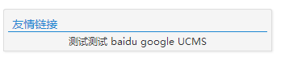

(1).建立友情链接栏目,建立相应字段
使用管理员账号登陆后台,点击右上角的栏目管理,点击增加栏目

添加好后默认会跳转到栏目的配置页面,对友情链接这个栏目进行设置
栏目数据库表:友情链接与默认文章不是一个类型,建议改成另外的名字,不要使用默认的表
因为友情链接只需在首页显示,所以将前台设置中的"禁用该栏目勾上"
配置好栏目后,为友情链接栏目增加相应的字段
title 网站标题,字段类型为:文本框
url 网站链接,字段类型为:文本框
ifshow 是否启用,字段类型为:勾选框
content 备注,字段类型为:多行文本
确认以上字段正确后,点击"保存并创建至数据库",所有字段将创建到栏目配置中的数据库表中.
点击右侧栏目列表中的"友情链接栏目",点击增加,相应的表单已经可以显示了

添加几个测试的友情链接,并在下一步中显示出来吧!
(2).修改模板代码,输出友情链接列表
在默认的首页模板文件中显示链接列表

使用alist()函数输出链接列表,使用下面的代码替换掉红色框内的代码
{{$set=array()}}
{{$set['cid']=友情链接栏目的名字或者栏目cid}}
{{$set['pagesize']=10}}//友情链接显示的数量
{{$set['where']['ifshow']=1}}//只显示打勾的链接
{{$links=alist($set)}}
{{loop $links['list'] as $a}}
<li><a href="{{$a['url']}}" target="_blank">{{$a['title']}}</a></li>
{{/loop}}
刷新您的首页,您刚添加的友情链接已经显示出来了(如果您设置了首页缓存时间则请在后台清空缓存)

恭喜您已经完成了一个简单的栏目搭建!!!